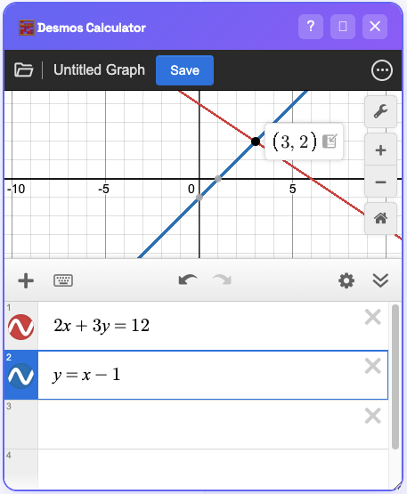
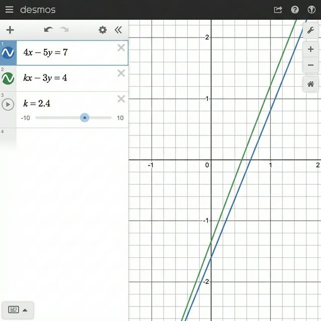
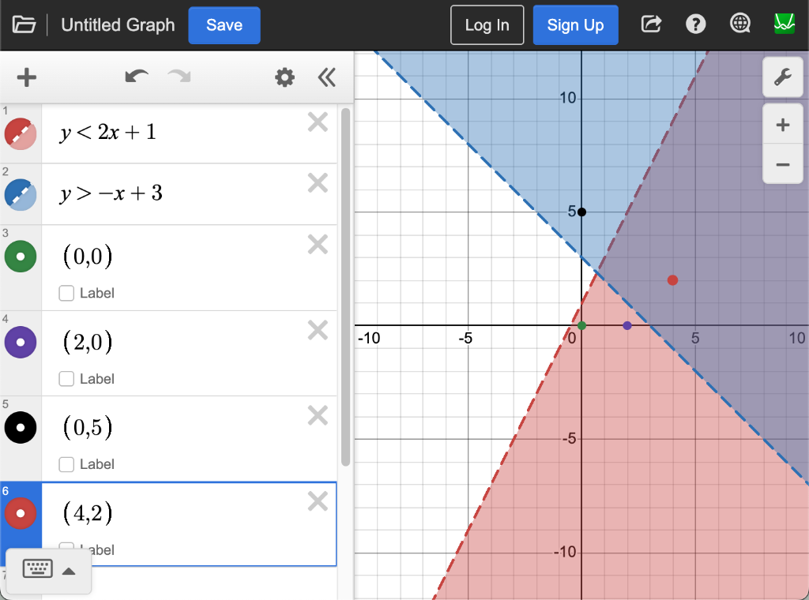

System Solver
Solve systems of linear equations instantly. No substitution, no elimination. Just the gray dots.
⚔️ The Intersection Hack
Don't use substitution. Just type the equations and click the intersection.
📝 SAT Problem
The system of equations above has solution \((x, y)\). What is the value of \(5x\)?
Step 1: Type Equations for Digital SAT System of Equations Trick
Don't rearrange for \(y\). Just type them into two separate lines in Desmos.
y = x - 1
Step 2: Find Intersection to Solve SAT Systems Promptly
Click the point where the lines cross. Desmos displays a gray dot at (3, 2).
The question asks for \(5x\). Since \(x = 3\), the answer is \(5(3) = 15\).
✅ Final Answer:
15 (Answer choice C)
🚫 The "No Solution" Trap
When questions ask for "No Solution", they mean Parallel Lines (Same Slope).
📝 SAT Problem
For what value of \(k\) does the system of equations above have no solution?
Step 1: Use the Slider Hack
Type the equations exactly as shown. Desmos will ask if you want to add a slider for \(k\). Click "all".
Step 2: Make Lines Parallel
Move the slider until the lines look perfectly parallel (never crossing).
At \(k = 2.4\), the lines are parallel. This is the "No Solution" state.
✅ Final Answer:
2.4 (Answer choice B)
🎨 The Shading Zone
For systems of inequalities, the answer is in the double-shaded region.
📝 SAT Problem
Which point \((x, y)\) is a solution to the system of inequalities above?
Step 1: Graph & Spot the Dark Zone
Type both inequalities. Look for where the blue and red shadings overlap (the darkest region).
Step 2: Check the Points
Type the point \((4, 2)\). Since it lands inside the double-shaded region, it is the correct answer.
✅ Final Answer:
(4, 2) (Answer choice D)
⚔️ Mastered the Intersection Hack?
Put your speed to the test with our 800-level challenge set.
Hardest System Questions
Mastered the basic intersections? Now try our most deceptive linear & non-linear systems.
Try Hardest Systems →